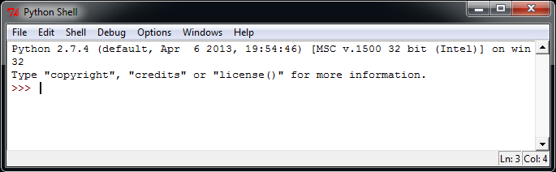

Python 基礎構文
Python 言語は Perl、C、Java などの言語と多くの類似点があります。しかし、いくつかの相違点も存在します。
この章では Python の基礎構文を学習し、Python プログラミングをすばやく習得できるようにします。
最初の Python プログラム
対話型プログラミング
対話型プログラミングではスクリプトファイルを作成する必要はなく、Python インタプリタの対話モードでコードを記述します。
Linux では、コマンドラインで Python コマンドを入力するだけで対話型プログラミングを開始できます。プロンプトウィンドウは次のとおりです。
Python 2.7.6 (default, Sep 9 2014, 15:04:36)
[GCC 4.2.1 Compatible Apple LLVM 6.0 (clang-600.0.39)] on darwin
Type "help", "copyright", "credits" or "license" for more information.
>>>
Windows では、Python のインストール時に対話型プログラミングクライアントがすでにインストールされています。プロンプトウィンドウは次のとおりです。

Python プロンプトで次のテキストを入力し、Enter キーを押して実行結果を確認します。
>>> print ("Hello, Python!")
Python 2.7.6 バージョンでは、上記の例の出力結果は次のとおりです。
Hello, Python!
スクリプト型プログラミング
スクリプトを引数としてインタプリタを呼び出してスクリプトの実行を開始し、スクリプトが完了するまで実行します。スクリプトの実行が完了すると、インタプリタは有効ではなくなります。
簡単な Python スクリプトプログラムを作成しましょう。すべての Python ファイルは.pyを拡張子とします。次のソースコードを test.py ファイルにコピーしてください。
print ("Hello, Python!")
ここでは、Python インタプリタの PATH 変数が設定されていると仮定します。次のコマンドでプログラムを実行します。
$ python test.py
出力結果：
Hello, Python!
別の方法で Python スクリプトを実行してみましょう。test.py ファイルを次のように変更します。
例
print ("Hello, Python!")
ここでは、Python インタプリタが /usr/bin ディレクトリにあると仮定し、次のコマンドでスクリプトを実行します。
$ chmod +x test.py # 脚本文件添加可执行权限 $ ./test.py
出力結果：
Hello, Python!
Python2.x で Python3.x の print 関数を使用する
Python2.x バージョンで Python3.x の print 関数を使用したい場合は、__future__パッケージをインポートできます。このパッケージは Python2.x の print 文を無効にし、Python3.x の print 関数を採用します：
例
>>> print list # Python2.x の print 文
['a', 'b', 'c']
>>> from __future__ import print_function # __future__ パッケージをインポート
>>> print list # Python2.x の print 文は無効になり、使用するとエラーになります
File "<stdin>", line 1
print list
^
SyntaxError: invalid syntax
>>> print (list) # Python3.x の print 関数を使用
['a', 'b', 'c']
>>>
Python3.x と Python2.x の互換性のために設計された多くの機能は、__future__このパッケージをインポートすることで利用できます。
Python 識別子
Python では、識別子は英字、数字、アンダースコアで構成されます。
Python では、すべての識別子に英字、数字、アンダースコア(_)を含めることができますが、数字で始めることはできません。
Python の識別子は大文字と小文字を区別します。
アンダースコアで始まる識別子には特別な意味があります。単一のアンダースコアで始まるものは、_foo直接アクセスできないクラス属性を表し、クラスが提供するインターフェースを介してアクセスする必要があります。from xxx import *（from xxx import * では）インポートできません。
二重アンダースコアで始まるものは__fooクラスのプライベートメンバーを表します。二重アンダースコアで始まり終わるものは__foo__Python 内の特殊メソッド専用の識別子を表します。例えば__init__()クラスのコンストラクタを表します。
Python は同じ行に複数の文を表示できます。方法はセミコロンで区切ることです。;たとえば次のようになります。
>>> print ('hello');print ('runoob');
hello
runoob
Python 予約語
次のリストは Python の予約語を示しています。これらの予約語は定数、変数、またはその他の識別子名として使用できません。
Python のキーワードはすべて小文字のみで構成されています。
| and | exec | not |
| assert | finally | or |
| break | for | pass |
| class | from | |
| continue | global | raise |
| def | if | return |
| del | import | try |
| elif | in | while |
| else | is | with |
| except | lambda | yield |
行とインデント
Python を学ぶ上で他の言語との最大の違いは、Python のコードブロックが波括弧を使用しないことです。{}クラス、関数、その他の論理判断を制御するために使うのではなく、python の最も特徴的な点はインデントを使ってモジュールを記述することです。
インデントの空白の数は可変ですが、すべてのコードブロック文は同じ数のインデント空白を含む必要があります。これは厳密に実行する必要があります。
次の例では、インデントは 4 つのスペースです:
例
print ("True")
else:
print ("False")
次のコードは実行時にエラーになります：
例
# -*- coding: UTF-8 -*-
# ファイル名: test.py
if True:
print ("Answer")
print ("True")
else:
print ("Answer")
# 厳密なインデントがないため、実行時にエラーが発生します
print ("False")
上記のコードを実行すると、次のようなエラー警告が表示されます：
File "test.py", line 11
print ("False")
^
IndentationError: unindent does not match any outer indentation level
IndentationError: unindent does not match any outer indentation levelこのエラーは、使用しているインデント方法が一貫していないことを示しています。tab キーによるインデントとスペースによるインデントがあるので、統一してください。
もしIndentationError: unexpected indentエラーの場合、python コンパイラは「Hi、相棒、ファイルの形式が正しくないよ。tab と スペースが揃っていない可能性がある」と伝えています。そのため python は形式に非常に厳格です。
したがって、Python のコードブロックでは、行頭のインデントに同じ数のスペースを使用する必要があります。
各インデントレベルでは、単一のタブ 或 スペース 2 つ 或 スペース 4 つを使用することをお勧めします。混在させないでください。
複数行の文
Python の文は通常、新しい行で文の終わりとみなされます。
ただし、バックスラッシュ（\）を使用すると、1 行の文を複数行に分割して表示できます。次のようになります：
total = item_one + \
item_two + \
item_three
文に []、{}、() の括弧が含まれる場合は、複数行の連結記号を使用する必要はありません。次の例のとおりです：
days = ['Monday', 'Tuesday', 'Wednesday',
'Thursday', 'Friday']
Python 引用符
Python は引用符（'）、二重引用符（"）、三重引用符（''' 或 """）を使用して文字列を表すことができます。引用符の開始と終了は同じ種類でなければなりません。
三重引用符は複数行で構成でき、複数行テキストを記述するための簡潔な構文です。ドキュメント文字列としてよく使用され、ファイル内の特定の場所ではコメントとして扱われます。
word = 'word' sentence = "这是一个句子。" paragraph = """这是一个段落。 包含了多个语句"""
Python コメント
python では単行コメントは#で始まります。
例
# -*- coding: UTF-8 -*-
# ファイル名: test.py
# 最初のコメント
print ("Hello, Python!") # 2 番目のコメント
出力結果：
Hello, Python!
コメントは文または式の行末に置くことができます：
name = "Runoob" # 这里的内容是一个注释
python では複数行コメントに 3 つの単一引用符を使用します'''または、3 つの二重引用符を使用します"""。
例
# -*- coding: UTF-8 -*-
# ファイル名: test.py
'''
これは単一引用符を使用した複数行コメントです。
これは単一引用符を使用した複数行コメントです。
これは単一引用符を使用した複数行コメントです。
'''
"""
これは二重引用符を使用した複数行コメントです。
これは二重引用符を使用した複数行コメントです。
これは二重引用符を使用した複数行コメントです。
"""
Python の空行
関数間やクラスのメソッド間は空行で区切り、新しいコードの始まりを示します。クラスと関数のエントリの間も 1 行の空行で区切り、関数エントリの始まりを強調します。
空行はコードのインデントとは異なり、Python の構文の一部ではありません。空行を挿入しなくても Python インタプリタはエラーになりません。ただし、空行には、機能や意味の異なる 2 つのコードを区切って、将来のコードの保守やリファクタリングを容易にする役割があります。
覚えておいてください：空行もプログラムコードの一部です。
ユーザー入力を待つ
次のプログラムは実行後、ユーザー入力を待ち、Enter キーを押すと終了します：
#!/usr/bin/python
# -*- coding: UTF-8 -*-
raw_input("按下 enter 键退出，其他任意键显示...\n")
上記のコードでは、\n改行を実現します。ユーザーが enter(リターン) キーを押すと終了し、その他のキーが表示されます。
同じ行に複数の文を表示する
Python は同じ行に複数の文を使用できます。文の間はセミコロン(;)で区切ります。以下は簡単な例です：#!/usr/bin/python import sys; x = 'runoob'; sys.stdout.write(x + '\n')
上記のコードを実行すると、出力結果は次のとおりです：
$ python test.py runoob
print 出力
print のデフォルト出力は改行です。改行しないようにするには、変数の末尾にカンマを追加する必要があります。,。
例
# -*- coding: UTF-8 -*-
x="a"
y="b"
# 改行出力
print x
print y
print '---------'
# 改行なし出力
print x,
print y,
# 改行なし出力
print x,y
上記の例の実行結果は次のとおりです：
a b --------- a b a b
詳細は以下を参照してください：Python2 と Python3 の print 改行なし
複数の文で構成されるコードグループ
インデントが同じ一連の文はコードブロックを構成し、これをコードグループと呼びます。
if、while、def、class などの複合文は、最初の行がキーワードで始まり、コロン(:)で終わります。その行に続く1行または複数行のコードがコードグループを構成します。
最初の行と後続のコードグループをまとめて節(clause)と呼びます。
以下の例のとおりです：
if expression : suite elif expression : suite else : suite
コマンドライン引数
多くのプログラムは、いくつかの基本情報を確認するための操作を実行できます。Python では次のものを使用できます-hパラメータを使用して各引数のヘルプ情報を表示します：
$ python -h usage: python [option] ... [-c cmd | -m mod | file | -] [arg] ... Options and arguments (and corresponding environment variables): -c cmd : program passed in as string (terminates option list) -d : debug output from parser (also PYTHONDEBUG=x) -E : ignore environment variables (such as PYTHONPATH) -h : print this help message and exit [ etc. ]
スクリプト形式で Python を実行する場合、コマンドラインから入力された引数を受け取ることができます。具体的な使用方法は以下を参照してくださいPython コマンドライン引数。
その他の拡張
younger
129***3390@qq.com
スクリプト実行時に引数を渡すには、sys モジュールを使用します。test.py を次のように編集します
sys.argv はコマンドライン引数を取得するために使用します
コマンドを実行した結果：
sys.argv[0] ファイル自体のパスを表し、渡される引数はsys.argv[1]から始まります。
younger
129***3390@qq.com
qing
282***728@qq.com
参照URL
スクリプト言語の最初の行の目的は、このファイル内のコードをどの実行プログラムで実行したいかを示すことです。それだけです。
#!/usr/bin/python: は、OS にこのスクリプトを実行するとき、/usr/bin 下の python インタプリタを呼び出すように指示します。
#!/usr/bin/env python(推奨): この使い方は、OS ユーザーが python をデフォルトの /usr/bin パスにインストールしていない場合に備えるためです。システムがこの行を見ると、まず env 設定から python のインストールパスを探し、対応するパスのインタプリタプログラムを呼び出して操作を完了します。
#!/usr/bin/pythonpython のパスを固定で書き込むのと同じです。
#!/usr/bin/env python環境設定から python ディレクトリを探します。この書き方を推奨します
qing
282***728@qq.com
参照URL
TRER
234***9fs9@qq.com
ネット上で見つけた Python 基礎構文の図：
TRER
234***9fs9@qq.com